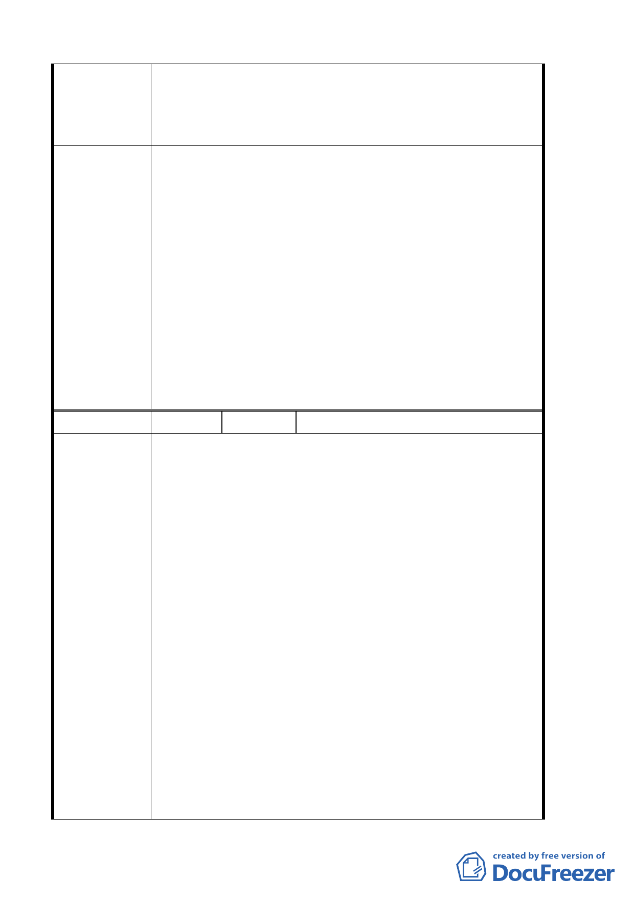

委員會
決議
編號
陳情理由
住宅與萬華商圈互相結合，以提升萬華區的經濟
效益。
4. 日後針對本更新案有任何相關之會議，請確實通
知本人列席與會。
1.為配合整體發展政策及加速推動本計畫區推動都
市更新，改善當地環境品質，計畫範圍全區劃定
為都市更新單元，並得依都市更新條例及其相關
規定辦理，並以全區原法定容積據以核計都市更
新獎勵容積。
2.本案辦理都市更新事業應併同開闢廣場用地，開
闢完成後須登記為臺北市所有。
3.有關變更後之廣場用地位置以本次所送計畫內容
通過，並俟後續擬定都市更新事業暨權利變換計
畫報核時，本案再行公告發布實施。惟為保留計
畫彈性，於都市更新事業計畫擬具期間如有涉及
廣場位置調整之更合適方案，市府需再提本委員
會審議。
4 陳情人 洪陳襖
1. 反對 貴局將服飾文化館前之住三之ㄧ住宅區改
為廣場用地，以免淪為遊民聚集處。日後如有此
案之會議，煩請確實通知本人參與。
2. 就 貴局計畫變更臺北市萬華區莒光段三小段 190
地號等 11 筆土地第三之一種住宅區為廣場用地
一案，本人有不同意見。 貴局擬將面臨西園路二
段與艋舺大道之一排老舊房子拆掉，作為服飾文
化館之廣場，本人覺得萬萬不可；眾所皆知，服
飾文化館自開幕以來效果不彰，已成一蚊子館，
已預見再設的廣場將再成為遊民聚集的地方。
3. 每一計畫案的成敗與否，本人深信當地居民絕對
比所謂的一些專家學者們更關心更了解。依照 貴
局計畫設置廣場如成為遊民聚集處，鄰近環境複
雜，將不利房價，反之不設置廣場將可增長面向
西園路二段大馬路的建築線，店面家數增加，商
圈更廣，整個開發案的價值更提昇。
4. 貴局若將之變更為廣場，將屬公共設施用地，本
人所有之 193、195 土地，門牌號為西園路二段
36 號建築物，將成為不合土地使用分區的規定，
7